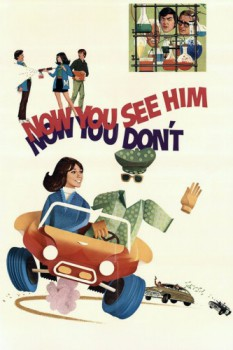

Country:United States, 88 minutes
Spoken languages:English
Genres:Comedy, Family, Sci-Fi, Fantasy
Director(s):Robert Butler
Writer(s):Joseph L. McEveety
Video Codec:Unknown
Number: 1592

Certification:G
Storyline:
Dexter Riley is a science student at Medfield College who inadvertently invents a liquid capable of rendering objects and people invisible. Before Dexter and his friends, Debbie and Richard Schuyler, can even enjoy their spectacular discovery, corrupt businessman A.J. Arno plots to get his greedy hands on it. Slapstick hijinks ensue as Dexter and his pals try to thwart the evil Arno before he can use the invisibility spray to rob a bank.
Cast:
Kurt Russell (as Dexter Riley), Cesar Romero (as A.J. Arno), Joe Flynn (as Dean Eugene (E.J.) Higgins), Jim Backus (as Timothy Forsythe), William Windom (as Professor Lufkin)
Medium: Media file,
Location: D:\Disney\Now You See Him Now You Don't.mp4
Loaned: No
Aspect ratio: Unknown